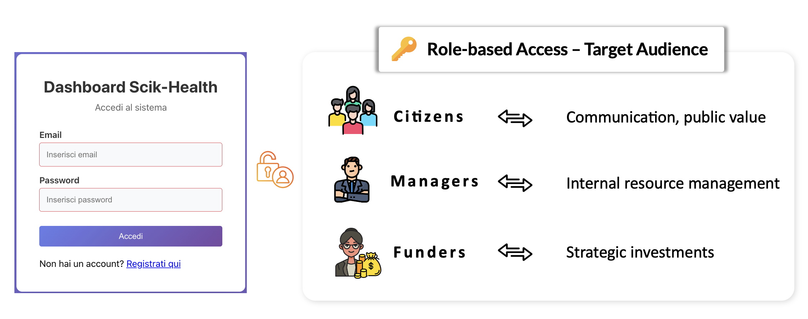
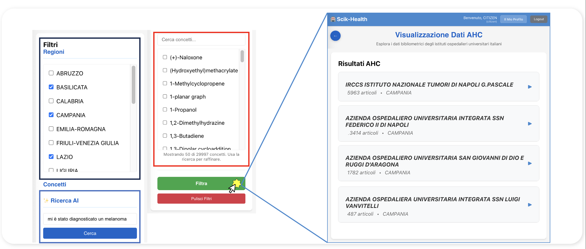
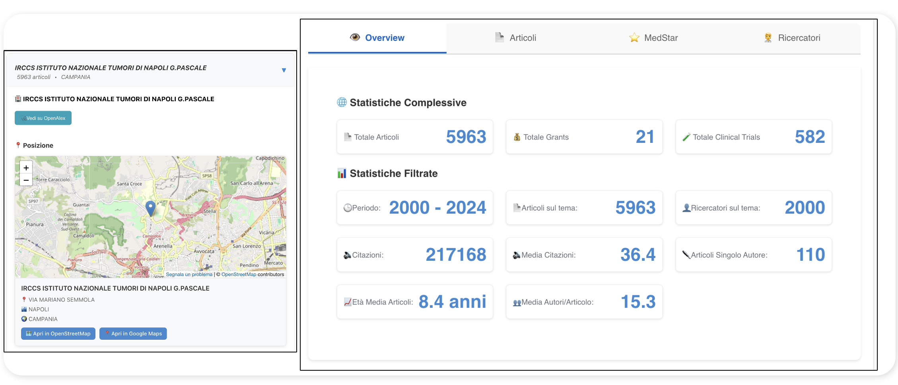
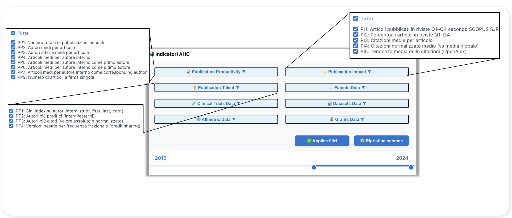
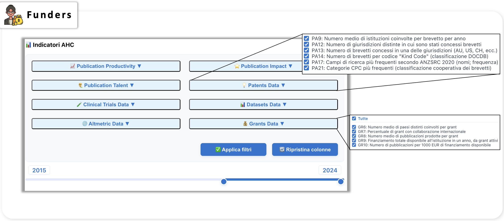
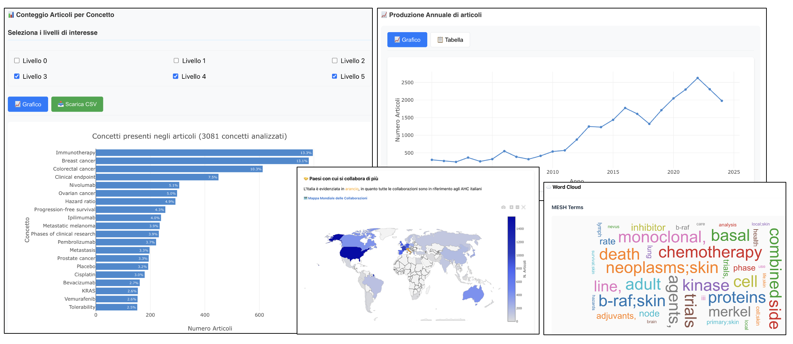

SciK-Health App
🌐 SciK-Health: Exploring Diseases, Experts, and Research Centres with One Question
SciK-Health (Scientific Knowledge in Health) is an innovative web application designed to transform the scientific production of Italian Academic Health Science Centres (AHSCs) into actionable knowledge for citizens, healthcare professionals, policymakers, and researchers.
The application provides intuitive access to a comprehensive database integrating over 25 years of scientific production from 49 Italian public AHSCs, enabling users to explore diseases, identify research experts, and evaluate institutional performance through a unified query interface.
📊 The Data Foundation
SciK-Health is built on an integrated data pipeline that combines bibliometric records, clinical trials, patents, grants, datasets, and social impact metrics from multiple authoritative sources:
Data Sources
- OpenAlex: Over 220.000 scientific publications (2000–2024)
- Full metadata including titles, abstracts, authors, affiliations, MeSH terms, concepts, and citation networks
- Open Access status and cost information
- Research Organization Registry (ROR) identifiers for institutional disambiguation
- Dimensions: Comprehensive scientometric data
- Clinical trials with participant information, phases, and investigator details
- Research grants with funding amounts and duration
- Patents with jurisdiction, inventor names, and classification codes
- Datasets with repository links and research categories
- Altmetric: Social and digital impact metrics
- Over 74.000 articles with Altmetric Attention Scores
- Mentions across social media, news outlets, policy documents, and Wikipedia
- Reader statistics from Mendeley and CiteULike
🎯 Role-Based Access: Three User Perspectives
SciK-Health adopts a role-based design philosophy, offering tailored interfaces and functionalities for three primary user groups:

👥 Citizens
Purpose: Communication and public value
For citizens seeking reliable health information, SciK-Health provides:
- Unified Search: A single query interface to explore diseases, treatments, and research centers across all Italian AHSCs
- Expert Identification: Find leading researchers by topic, disease, or medical specialty
- Institutional Comparison: Compare AHSCs based on scientific production, clinical trials, and research impact
- Transparent Metrics: Access comprehensive statistics on publications, citations, grants, and clinical trials per institution
- Geographic Visualization: Interactive maps showing AHSC locations and their research profiles
The citizen interface emphasizes accessibility and health literacy, enabling informed decision-making about healthcare providers and treatment options.
Unified Search Interface
The citizen portal provides an intuitive search system with regional filters and concept-based queries. Users can search by disease, treatment, or medical condition, with autocomplete suggestions helping to refine searches across nearly 30,000 indexed concepts.

Institutional Overview and Statistics
Once an AHSC is selected, users can access comprehensive statistics organized in four main tabs: Overview, Articles (Articoli), MedStars (top researchers), and Researchers (Ricercatori). The Overview tab provides key performance metrics including total publications, grants, clinical trials, citations, researchers on the topic, and average article age.

Detailed Tabs for In-Depth Exploration
The tabbed interface allows citizens to drill down into specific aspects of research performance:
- Articles Tab: Browse publications by title, citations, and authors with links to PubMed and OpenAlex
- MedStar Tab: Discover top-performing researchers ranked by publication volume and citation impact
- Researchers Tab: Search for specific researchers with detailed profiles showing article counts and total citations

👔 Managers
Purpose: Internal resource management
For academic and healthcare managers, the platform offers:
- Performance Dashboards: Monitor institutional productivity across five dimensions (bibliometric, social & digital, industrial impact, clinical research, funding & grants)
- Talent Analytics: Identify top-performing researchers (MedStars) based on publication volume, citation impact, and collaboration patterns
- Temporal Trends: Track research output evolution over time with dynamic visualizations
- Comparative Benchmarking: Position your institution relative to peer AHSCs
- Indicator Selection: Customize dashboards with over 100 performance indicators across publication productivity, impact, collaboration, talent distribution, clinical trials, patents, grants, and altmetrics
The manager interface supports strategic planning, resource allocation, and evidence-based decision-making at the institutional level.
Manager Dashboard: Institutional Performance at a Glance
The manager portal provides a comprehensive view of institutional performance with geographic positioning, detailed statistics (comprehensive and filtered), and temporal trend visualizations. Managers can monitor key metrics including total articles, grants, clinical trials, and track the evolution of top researchers (MedStars) over time.

Customizable Indicator Selection
Managers can select from over 100 performance indicators organized across the five key dimensions. The interface allows filtering by time period (2015-2024 slider), selecting specific indicator categories (Publication Productivity, Publication Impact, Publication Talent, Patents Data, Clinical Trials Data, Datasets Data, Altmetric Data, Grants Data), and exporting filtered data as CSV for further analysis.
Each dimension offers detailed sub-indicators. For example: - Publication Productivity: Total annual publications, average authors per article, percentage of Open Access articles - Altmetric Data: Number of articles with Altmetric scores, percentage with Altmetric > 0, mentions by platform (Facebook, RSS blogs, Google+) - Patents Data: Average institutions involved per patent, distinct jurisdictions, number of patents per jurisdiction, Kind Code classifications, top research fields by ANZSRC 2020, CPC categories

💰 Funders
Purpose: Strategic investments
For funding agencies and policymakers, SciK-Health provides:
- Portfolio Analysis: Examine funded research across multiple dimensions and time periods
- Impact Assessment: Evaluate research outputs, citations, and societal engagement resulting from investments
- Innovation Metrics: Track patent production, technological domains, and knowledge transfer activities
- International Collaboration: Assess cross-border research partnerships and grant co-funding patterns
- Research Field Mapping: Identify emerging topics, research gaps, and strategic investment opportunities using ANZSRC, RCDC, HRCS, and CPC classifications
The funder interface enables data-driven funding decisions and portfolio optimization based on comprehensive performance evidence.
Funder Interface: Strategic Investment Analysis
The funder portal provides specialized tools for analyzing research portfolios, innovation outputs, and funding effectiveness. The interface organizes indicators by research dimension with detailed metrics on patents (institutions per patent, jurisdictions, Kind Codes, ANZSRC research fields, CPC classifications) and grants (countries involved, international collaboration percentage, publications per grant, total funding availability, publication efficiency per 1000 EUR).
Funders can track temporal trends from 2015 to 2024, compare institutions across innovation metrics, and identify emerging research fields through detailed classification schemes (ANZSRC 2020, RCDC Categories, HRCS categories, CPC codes).

🔍 Key Functionalities
Multi-Dimensional Search
- Concept-Based Search: Query by disease, treatment, medical condition, or research topic using hierarchical concept levels (L0–L4) and MeSH terms
- Author Search: Find researchers by name with automatic disambiguation and affiliation tracking
- Institution Search: Browse all 49 Italian public AHSCs with filtering by region, type, and research focus
- Topic Exploration: Discover research themes through keyword analysis, bigram extraction from titles/abstracts, and network visualization
Comprehensive Indicators
The application computes and displays indicators across five performance dimensions:
📚 Bibliometric Dimension - Productivity: Total documents, average authors per article, Open Access percentage - Impact: Average citations, normalized citations (NTC), journal quartiles (Q1–Q4 by SJR), citation trends - Collaboration: International co-authorship, institutional affiliations, average authors per article - Topics: Most frequent concepts (5 hierarchical levels), MeSH terms, primary topics, keywords, title/abstract bigrams - Talent: Gini concentration indices, top authors by volume and impact, fractional credit assignment
🌐 Social & Digital Impact (Altmetrics) - Altmetric Attention Score distribution (75th percentile) - Mentions by source: Facebook, Twitter/X, news media, policy documents, Wikipedia, YouTube, patents - Reader statistics: Mendeley, CiteULike - Percentage of publications with social impact (Altmetric Score > 0)
💡 Industrial Impact & Research Innovation (Patents) - Number of distinct patents by year - Patent status: Pending, Granted, Expired, Abandoned - Average citations per patent - Inventors per patent and per 100 internal authors - Jurisdictions: Number of countries where patents are registered - Classifications: Kind Codes (DOCDB), Fields of Research (ANZSRC 2020), RCDC Categories, HRCS RAC, IPCR, CPC - Top inventors and original assignees
🧪 Clinical Research Activity - Number of clinical trials initiated per year - Average trial duration and participant counts - Trials per 100 internal authors - Distribution by phase (Phase 1, 1/2, 2, 2/3, 3, 4, Post-Authorization, N/A) - Study types: Interventional, Observational - Gender inclusion: All, Male, Female - Registry information: ClinicalTrials.gov - Altmetric coverage of trials - Top funder countries and research classifications
💶 Funding & Grants - Number of grants per year - Average funding amounts (EUR) and duration - Funding per organization involved - International collaboration percentage - Publications per grant and per 1000 EUR of active funding - Top funders, programs, research organizations - Research field classifications (ANZSRC 2020, RCDC, HRCS HC/RAC, Cancer Types, CSO, SDGs, Units of Assessment)
Interactive Visualizations
SciK-Health provides rich visual analytics to support data exploration and comparative analysis across institutions and time periods:
- Time Series Charts: Visualize trends in publication volume, citations, grants, trials, and patents over 25 years
- Geographic Maps: Explore AHSC locations with OpenStreetMap and Google Maps integration
- Network Graphs: Discover collaboration patterns among researchers, institutions, and countries (global collaboration map showing partnerships with Europe, North America, South America, and Australia)
- Word Clouds: Identify dominant research themes from MeSH terms and keywords
- Comparative Bar Charts: Benchmark institutions across selected indicators (e.g., article counts by concept/disease area: Immunotherapy, Breast cancer, Colorectal cancer, Clinical endpoints, etc.)
- Heatmaps: Detect patterns in multi-indicator performance matrices
Example Visualizations

Data Export
- CSV Downloads: Export filtered indicator data for external analysis
- Time Period Selection: Focus on specific years (2015–2024 slider interface)
- Indicator Customization: Select specific metrics for targeted exports
🚀 Access and Availability
Public Access (Citizens & Researchers)
The citizen-facing interface is freely accessible without registration, promoting health literacy and transparent access to scientific knowledge.
Restricted Access (Managers & Funders)
The manager and funder dashboards require institutional credentials. Access requests can be submitted through the registration portal, with approval granted to: - AHSC directors and academic managers - Regional health agencies and evaluation bodies - National and international funding organizations - Accredited research evaluation entities
📈 Impact and Applications
SciK-Health addresses critical needs across multiple stakeholder groups:
For Citizens - Identify specialized centers for specific medical conditions - Find research experts in particular disease areas - Make informed decisions about healthcare providers based on research excellence - Understand institutional strengths in clinical trials and innovation
For Healthcare Professionals - Discover collaborators with complementary expertise - Benchmark their institution’s performance - Identify emerging research topics and clinical trial opportunities - Track citation impact and research visibility
For Institutional Managers - Monitor research productivity and impact trends - Identify talent gaps and recruitment opportunities - Optimize resource allocation based on performance data - Support strategic planning with evidence-based insights - Prepare accreditation and evaluation reports
For Policymakers and Funders - Evaluate return on investment from research funding - Identify high-performing institutions for targeted support - Detect research gaps and strategic investment opportunities - Track innovation outputs (patents, datasets, clinical trials) - Assess societal impact through altmetrics